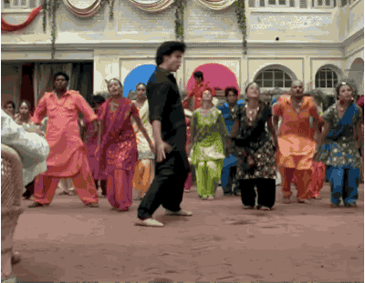

Zoals je ondertussen waarschijnlijk al weet, vertrek ik in November voor 12 maanden naar Bangalore! Je bent dus een jaar van mij af, en dat mag op 24 October gevierd worden!

Er is echter een probleem ... je bent namelijk nog niet uitgenodigd!
Maar geen paniek, een uitnodiging is makkelijk te verkrijgen! Je moet enkel aantonen dat je zelf een fan van India bent! Je kan dit op verschillende manieren doen: